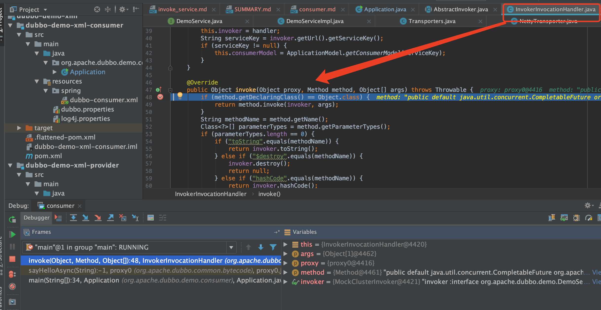
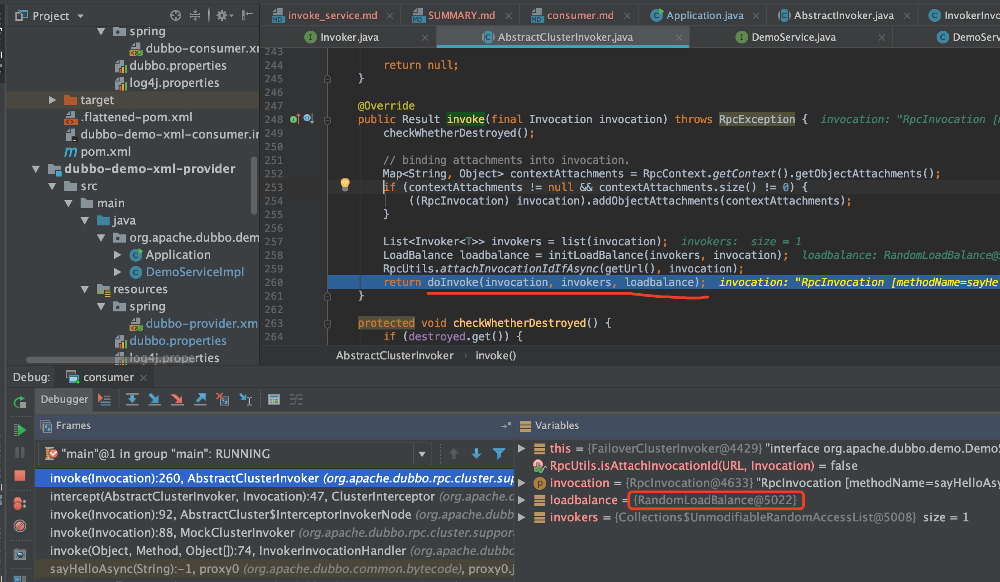
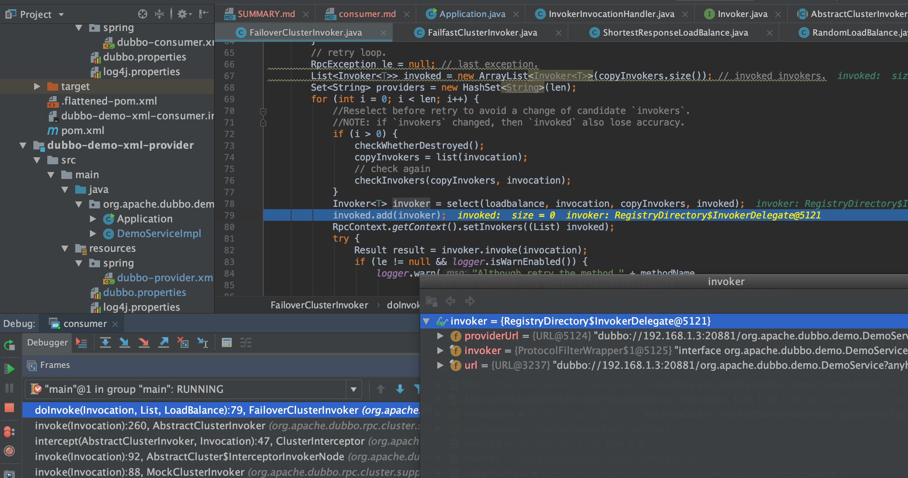
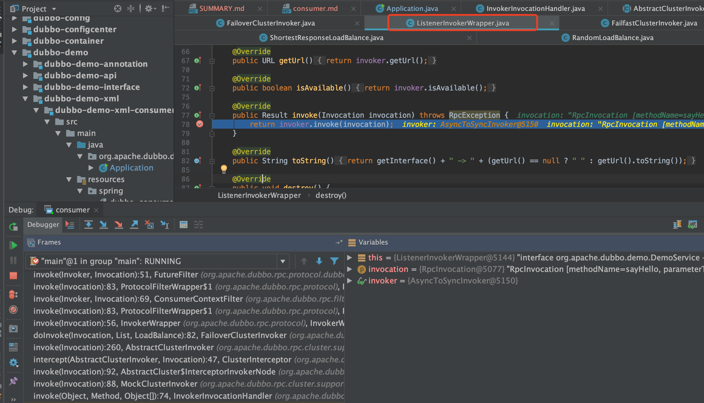
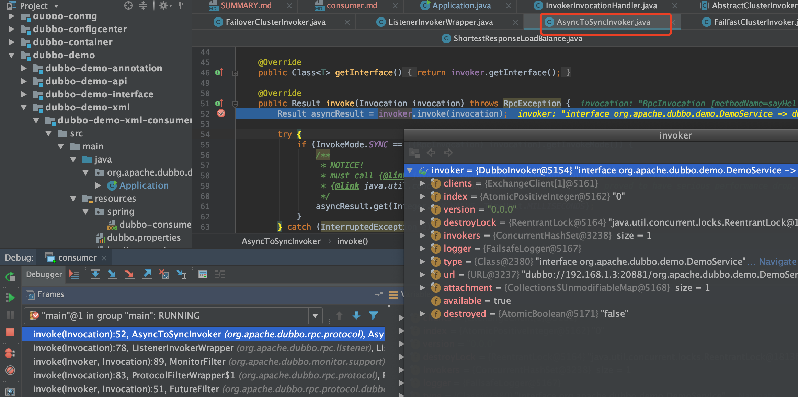
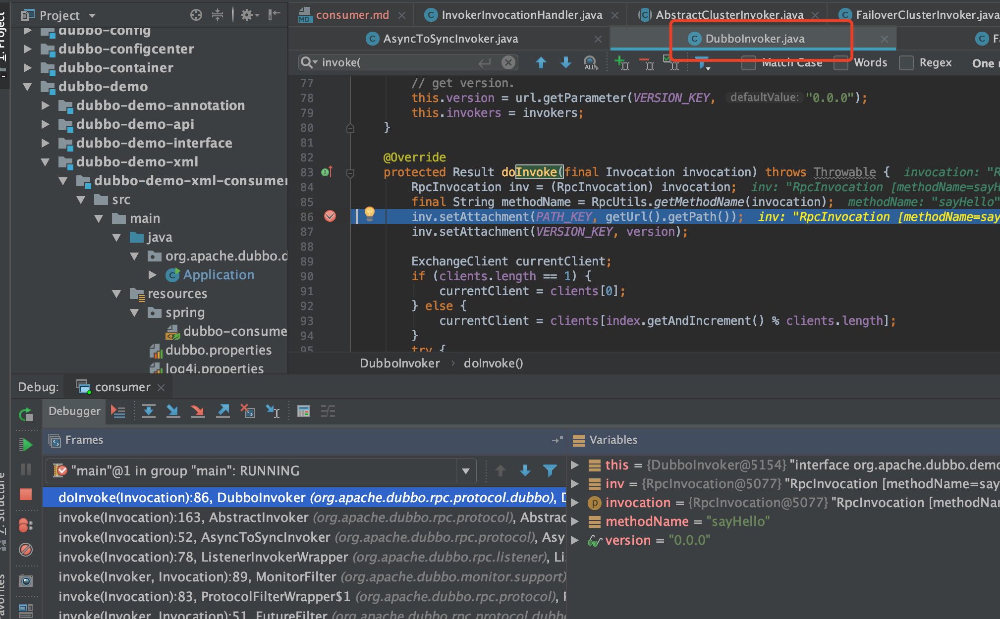
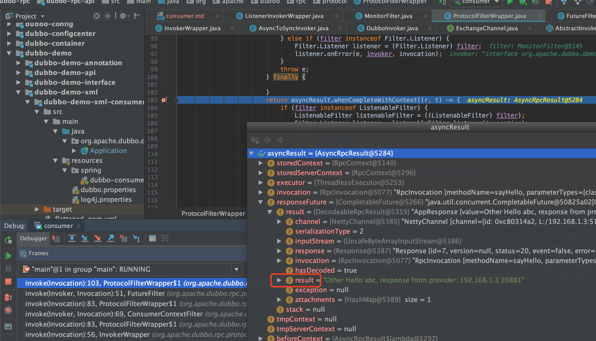

服务调用
源码流程

执行：invoker.invoke(rpcInvocation).recreate();
进入到org.apache.dubbo.rpc.cluster.support.AbstractClusterInvoker#invoke
@Override
public Result invoke(final Invocation invocation) throws RpcException {
checkWhetherDestroyed();
// binding attachments into invocation.
Map<String, Object> contextAttachments = RpcContext.getContext().getObjectAttachments();
if (contextAttachments != null && contextAttachments.size() != 0) {
((RpcInvocation) invocation).addObjectAttachments(contextAttachments);
}
List<Invoker<T>> invokers = list(invocation);
LoadBalance loadbalance = initLoadBalance(invokers, invocation);
RpcUtils.attachInvocationIdIfAsync(getUrl(), invocation);
return doInvoke(invocation, invokers, loadbalance);
}
默认loadbalance是RandomLoadBalance

服务容错，默认FailoverClusterInvoker
public class FailoverClusterInvoker<T> extends AbstractClusterInvoker<T> {
private static final Logger logger = LoggerFactory.getLogger(FailoverClusterInvoker.class);
public FailoverClusterInvoker(Directory<T> directory) {
super(directory);
}
@Override
@SuppressWarnings({"unchecked", "rawtypes"})
public Result doInvoke(Invocation invocation, final List<Invoker<T>> invokers, LoadBalance loadbalance) throws RpcException {
List<Invoker<T>> copyInvokers = invokers;
checkInvokers(copyInvokers, invocation);
String methodName = RpcUtils.getMethodName(invocation);
int len = getUrl().getMethodParameter(methodName, RETRIES_KEY, DEFAULT_RETRIES) + 1;
if (len <= 0) {
len = 1;
}
// retry loop.
RpcException le = null; // last exception.
List<Invoker<T>> invoked = new ArrayList<Invoker<T>>(copyInvokers.size()); // invoked invokers.
Set<String> providers = new HashSet<String>(len);
for (int i = 0; i < len; i++) {
//Reselect before retry to avoid a change of candidate `invokers`.
//NOTE: if `invokers` changed, then `invoked` also lose accuracy.
if (i > 0) {
checkWhetherDestroyed();
copyInvokers = list(invocation);
// check again
checkInvokers(copyInvokers, invocation);
}
// 根据负载均衡得到执行对象
Invoker<T> invoker = select(loadbalance, invocation, copyInvokers, invoked);
invoked.add(invoker);
RpcContext.getContext().setInvokers((List) invoked);
try {
Result result = invoker.invoke(invocation);
if (le != null && logger.isWarnEnabled()) {
logger.warn("Although retry the method " + methodName
+ " in the service " + getInterface().getName()
+ " was successful by the provider " + invoker.getUrl().getAddress()
+ ", but there have been failed providers " + providers
+ " (" + providers.size() + "/" + copyInvokers.size()
+ ") from the registry " + directory.getUrl().getAddress()
+ " on the consumer " + NetUtils.getLocalHost()
+ " using the dubbo version " + Version.getVersion() + ". Last error is: "
+ le.getMessage(), le);
}
return result;
} catch (RpcException e) {
if (e.isBiz()) { // biz exception.
throw e;
}
le = e;
} catch (Throwable e) {
le = new RpcException(e.getMessage(), e);
} finally {
providers.add(invoker.getUrl().getAddress());
}
}
throw new RpcException(le.getCode(), "Failed to invoke the method "
+ methodName + " in the service " + getInterface().getName()
+ ". Tried " + len + " times of the providers " + providers
+ " (" + providers.size() + "/" + copyInvokers.size()
+ ") from the registry " + directory.getUrl().getAddress()
+ " on the consumer " + NetUtils.getLocalHost() + " using the dubbo version "
+ Version.getVersion() + ". Last error is: "
+ le.getMessage(), le.getCause() != null ? le.getCause() : le);
}
}


同步方法调用会进入AsyncToSyncInvoker


org.apache.dubbo.rpc.protocol.dubbo.DubboInvoker#doInvoke
@Override
protected Result doInvoke(final Invocation invocation) throws Throwable {
RpcInvocation inv = (RpcInvocation) invocation;
final String methodName = RpcUtils.getMethodName(invocation);
inv.setAttachment(PATH_KEY, getUrl().getPath());
inv.setAttachment(VERSION_KEY, version);
ExchangeClient currentClient;
if (clients.length == 1) {
currentClient = clients[0];
} else {
currentClient = clients[index.getAndIncrement() % clients.length];
}
try {
boolean isOneway = RpcUtils.isOneway(getUrl(), invocation);
int timeout = calculateTimeout(invocation, methodName);
if (isOneway) {
boolean isSent = getUrl().getMethodParameter(methodName, Constants.SENT_KEY, false);
currentClient.send(inv, isSent);
return AsyncRpcResult.newDefaultAsyncResult(invocation);
} else {
ExecutorService executor = getCallbackExecutor(getUrl(), inv);
// 发起网络请求，获取结果
CompletableFuture<AppResponse> appResponseFuture =
currentClient.request(inv, timeout, executor).thenApply(obj -> (AppResponse) obj);
// save for 2.6.x compatibility, for example, TraceFilter in Zipkin uses com.alibaba.xxx.FutureAdapter
FutureContext.getContext().setCompatibleFuture(appResponseFuture);
AsyncRpcResult result = new AsyncRpcResult(appResponseFuture, inv);
result.setExecutor(executor);
return result;
}
} catch (TimeoutException e) {
throw new RpcException(RpcException.TIMEOUT_EXCEPTION, "Invoke remote method timeout. method: " + invocation.getMethodName() + ", provider: " + getUrl() + ", cause: " + e.getMessage(), e);
} catch (RemotingException e) {
throw new RpcException(RpcException.NETWORK_EXCEPTION, "Failed to invoke remote method: " + invocation.getMethodName() + ", provider: " + getUrl() + ", cause: " + e.getMessage(), e);
}
}
最后得到返回结果
